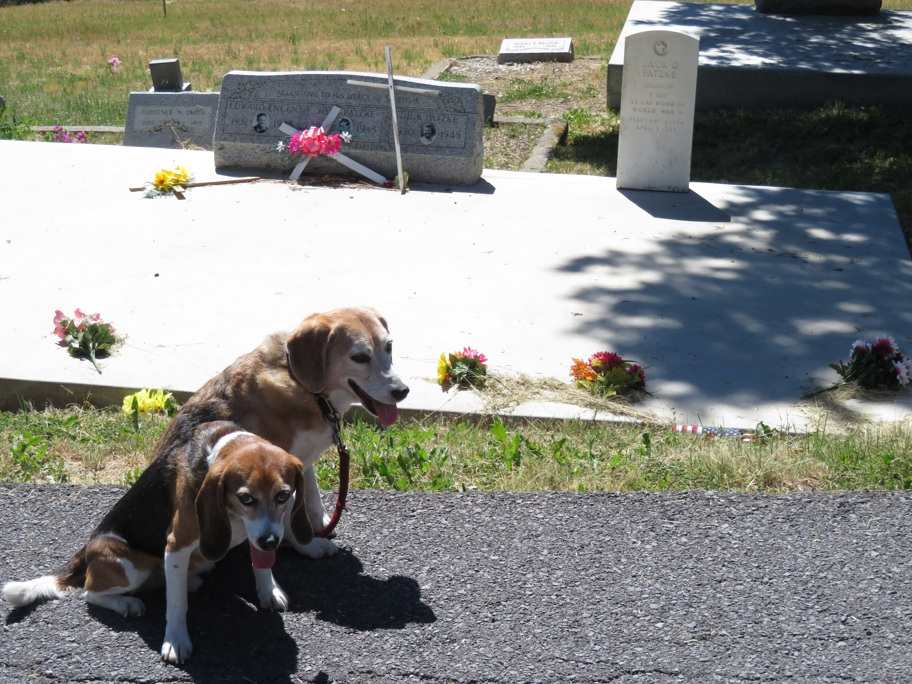

In World War II Japan launched thousands of fire balloons towards America. Only a few hundred made it and only one hurt anyone. It killed a teacher and six students, far from here in the forest northeast of Bly, Oregon, the only deaths from enemy action on home soil in World War II. Three of the students are buried here in Klamath Falls' cemetery.
The boys are really getting hot so we'd better press on.
Huxley Beagle Klamath Falls Oregon Wallace Beagle